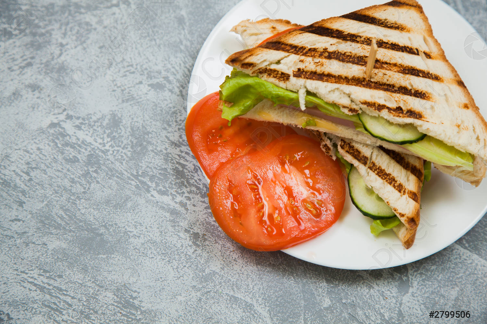

Sandwitch

Very, very tasty.
This is how to make a easy sandwitch.
Do you know why sandwitches are so famous? Because there are so easy to make and you can tune them however you want, so lets go!
Ingredients
- Toast
- Salami
- And, of course, cheese
Steps
- Put the one slice of toast into your sandwitchmaker
- Now put the salami on the toast
- Finally put our cheese on top of the toast and turn the sandwitchmaker on!
- Note: You can tune your sandwitch however you want, this was just the basic sandwitch!